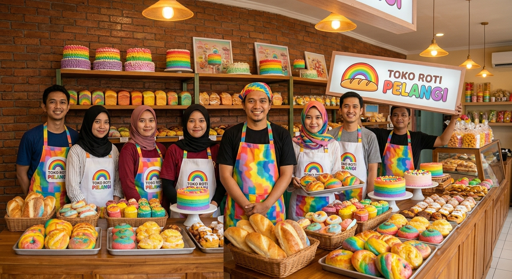

Tentang Kami
Visi kami adalah menjadi toko roti favorit keluarga dengan produk segar, harga terjangkau, dan pelayanan ramah. Kami juga menerima pesanan custom untuk ulang tahun, arisan, dan rapat kantor.
Toko Roti Lokal
Toko roti rumahan dengan pilihan roti segar, kue klasik, dan minuman hangat setiap hari.
Roti Pelangi adalah toko roti fiktif yang berdiri sejak 2018 di Kota Harmoni. Kami menghadirkan roti manis, roti gandum, bolu ulang tahun, dan paket camilan untuk acara keluarga maupun kantor.
Setiap pagi, tim produksi menyiapkan adonan segar dengan bahan pilihan seperti mentega premium, susu segar, dan isian cokelat berkualitas agar pelanggan mendapatkan rasa yang konsisten.

Visi kami adalah menjadi toko roti favorit keluarga dengan produk segar, harga terjangkau, dan pelayanan ramah. Kami juga menerima pesanan custom untuk ulang tahun, arisan, dan rapat kantor.

Kami mengutamakan kualitas rasa, kebersihan dapur produksi, dan tampilan produk yang menarik. Setiap pelanggan dapat memesan roti harian, paket hampers, atau kue dengan desain sederhana.
Informasi Internal
Tabel berikut menampilkan contoh data pegawai dan pembagian tugas di Roti Pelangi.
| No | Nama Pegawai | Jabatan | Shift | Kontak |
|---|---|---|---|---|
| 1 | Nadia Putri | Manajer Toko | Pagi | 0812-1000-1111 |
| 2 | Rizky Saputra | Kepala Baker | Pagi | 0812-2000-2222 |
| 3 | Salsa Maharani | Kasir | Siang | 0812-3000-3333 |
| 4 | Dimas Pratama | Admin Pesanan | Siang | 0812-4000-4444 |